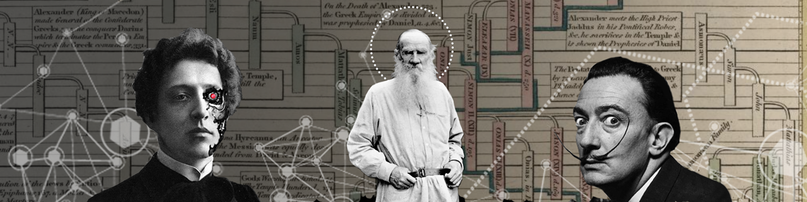
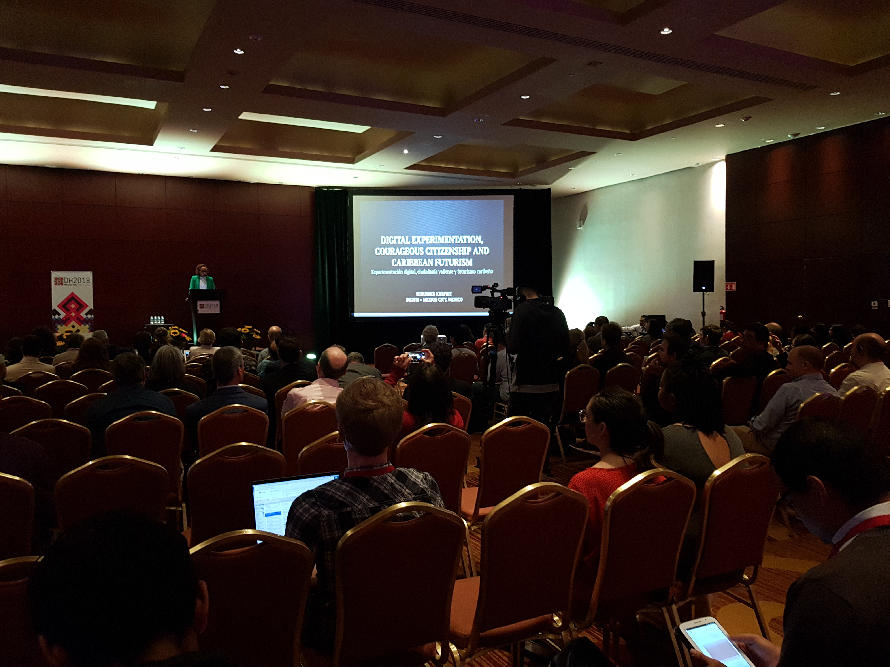

Тема номера: больше чем Digital Humanities
В этом номере
- DH-2018: обзор конференции, тематика которой необъятна и необозреваема
- Системный Блокъ: новое медиа про «цифровое человеческое»
- DH в Вышке: III Московско-тартуская школа по цифровым гуманитарным исследованиям «More than DH»
От редакции:
Июльский «Вестник Digital Humanities» припозднился не просто так.
Во-первых, мы ездили в Мехико на DH 2018 — Самую Главную Конференцию всех цифровых гуманитариев планеты. Если вы хотите почувствовать пульс Digital Humanities — непременно отправляйтесь на DH-2019 (Утрехт), DH-2020 (Оттава), DH-2021 (Токио) и далее по списку. А сейчас мы прощупали этот пульс для вас — читайте кардиограмму в аттаче наш обзор ниже.
Во-вторых, мы готовили к запуску «Системный Блокъ» — первый взрослый медиапроект с нашим участием. Взрослый не в смысле возраста читателя или отсутствия шуток (куда без них, если мы стартуем как научно-популярное сообщество «Вконтакте»), а в смысле полноценной редакции и претензии на широкую аудиторию. Поэтому тематика «Системного Блока» шире Digital Humanities: мы рассказываем о любых технологиях, проектах и инициативах на стыке цифрового и «человеческого». Традиционные DH-темы (компьютерное чтение художественной литературы, гуманитарные GIS, исследования произведений искусства в духе Big Data, цифровые архивы и корпуса, историческая информатика) дополняются здесь data-урбанистикой и городскими исследованиями, новыми областями внедрения искусственного интеллекта (HR, творчество, педагогика, игры...), а также обучающими статьями о конкретных инструментах анализа и визуализации данных. Наша миссия — не только вдохновлять, но и (пере)вооружать гуманитарных и социальных исследователей новыми технологиями.

В общем, если вас вдохновляет «поэзия цифрового будущего» и вы хотите не только быть в курсе, но и приложить руку к этому самому будущему — подписывайтесь на «Системный Блокъ», первый паблик про роботов на службе гуманитариев.
Еще лучше, если вам интересно присоединиться к команде — у нас много интересных задач. Заполните, пожалуйста, эту форму, и мы вам непременно напишем.
DH 2018: больше, чем Digital Humanities
Еще два года назад на конференции DH 2016 в Кракове мы поняли, что одна из функций Digital Humanities — объединять тех ученых, кто в своих родных научных областях выглядит маргиналом, «фриком», человеком со странными исследовательскими интересами. С тех пор программа каждой новой DH-конфренеции выглядит все более кричащей манифестацией этой особенности DH. Спектр тем все шире, в рамки Humanities они укладываются все более «условно». Да и в рамки собственно науки — не вполне: в Digital Humanities традиционно велика доля социального активизма (феминизм, борьба с расовым неравноправием, защита прав ЛГБТ, а в этом году из-за латиноамериканского размещения конференции — еще и антиколониализм).

Видимо, из этого разнообразия (трудно поддающегося классификации) вытекает давняя и многократно отмеченная проблема конференции — странная компоновка секций. Например, в этом году было 4 доклада о сетевом анализе драмы, которые очевидно дополняли друг друга; два из них были посвящены одной и той же узкой теме — исследованию протагонизма в драме через сетевые и текстовые метрики. Однако все 4 доклада оказались в разных секциях, в одном случае — параллельно. В результате авторы сами устроили неформальную импровизированную секцию во время кофе-брейка:

Тематика официальных секций подчас очень условна: «Maps, Networks, Archives», «Maps, Networks, Data» (да-да, это две разные секции в два разных дня), «Art History, Archives, Media», «Text Analysis, Cultural Studies» (попробуйте-ка сходу придумать DH-исследование, которое бы НЕ попадало под название этой секции хотя бы краешком).
Тем не менее тематические доминанты конференции все же выделялись — и в целом совпадали с общим тематическим делением Digital Humanities. Мы выделили такие доминантные темы (неизбежно отдав больше внимания тем докладам и постерам, на которые ходили сами):
Компьютерный анализ художественных текстов
Всевозможные distant reading, текстометрия и текст-майнинг литературных корпусов, анализ тональности художественных произведений, подсчет тех или иных слов/конструкций/характеристик. Некоторые примечательные исследования:
- Distributions of Function Words Across Narrative Time in 50,000 Novels (как распределены служебные слова в текстах романов; здесь есть тривиальные результаты вроде того, что неопределенный артикль ‘a’ чаще встречается в начале, а определенный ‘the’ — в конце, но есть и любопытные находки; взять хотя бы распределение союзов ‘and’ (и) и ‘or’ (или))
- Finding Data In A Literary Corpus: A Curatorial Approach (здесь интересна постановка задачи: с помощью лингвистической статистики авторы пытаются вычислить произведения, которые не были замечены читателями и критиками, но при этом могут представлять не меньшую культурную ценность, чем некоторые знаменитые работы)
- Exploration of Sentiments and Genre in Spanish American Novels (анализ тональности в романах разных жанров)
- SciFiQ And “Twinkle, Twinkle”: A Computational Approach To Creating “The Perfect Science Fiction Story (статья об электронном помощнике для изготовления идеальной научной фантастики. Авторы взяли 4000 тысячи текстов, предложили профессиональному писателю выбрать 50 лучших образчиков Sci-Fi. Затем автоматически выделили особенности избранных текстов и написали программу, в реальном времени проверяющую введенный текст на соответствие «идеалу»; а еще составили список правил «идеальной фантастики» с точки зрения компьютера. Прочитав эти правила, писатель создал новый рассказ, работая в программе и постоянно «оптимизируя» свой текст по ее требованиям. Рассказ в итоге опубликовали в журнале Wired, где критики не одобрили его «недостаточно человеческое звучание»... А вот некоторые правила «идеальной» научной фантастики из статьи: события должна происходить на другой планете с негуманоидными обитателями и авторитарным режимом, при этом главные герои — земляне, попадающие на планету впервые; кульминация событий происходит ночью в шторм, обязателен побег на футуристическом транспортном средстве; нужен флешбек на землю в детство главного героя, желательна сцена в саду с его родителями).
Стилометрия
Стилометрия формально относится к предыдущей категории, но в действительности — отдельное сформировавшееся и хорошо отделяемое направление. Доклады по стилометрии выдают относительную зрелость области: многие из них посвящены специфическим проблемам специфических алгоритмов определения авторства и измерения стиля (примеры раз, два, три), так что будут непонятны не только людям извне DH, но и просто из соседних секций. При этом аудитория у таких специфических докладов на DH2018 оказалась большая — видимо, потому что приехали все отцы-основатели digital/computational stylistics. Впервые официально собралась Special Interest Group on Digital Literary Stylistics (мы поучаствовали). Некоторые примечательные статьи по стилометрии (специфические не включаем):
- Women’s Books versus Books by Women (исследование стилистический отличий «женской прозы» от прозы вообще, написанной авторами-женщинами, и прозы авторов-мужчин)
- Polysystem Theory And Macroanalysis. A Case Study Of Sienkiewicz In Italian (стилометрист и художественный переводчик Ян Рыбицкий с соавторами применяют стилометрию для исследования переводов Сенкекича на итальянский; последовательно выделяя в сети стилистической близости текстов все более дробные кластеры, они добиваются одновременного выделения в группу переводов Сенкевича и Шекспира, подтверждая гипотезу о периферийной позиции переводной литературы на фоне национальной)
- A White-Box Model For Detecting Author Nationality By Linguistic Differences In Spanish Novels (авторы обучили классификатор делить романы на испанском языке на собственно испанские, мексиканские, кубинские и аргентинские, а затем проанализировали, какие признаки текста помогают в этом больше всего)
Геоинформатика в гуманитарных (и социальных) областях
- Histonets, Turning Historical Maps Into Digital Networks (авторы создали систему полуавтоматической оцифровки дорог на старых картах: нужно несколько раз выделить нужное место на отсканированном изображении, и дальше система обучается делать это по аналогии; на выходе — цифровой граф, который можно анализировать)
- Spatial Disaggregation of Historical Census Data Leveraging Multiple Sources of Ancillary Data (алгоритмы машинного обучения используют, чтобы адекватно разделить слишком общие данные переписей по нескольким более мелким территориальным объединениям)
Локализация Digital Humanities
- The History and Context of the Digital Humanities in Russia (Андрей Белый, Борис Ярхо, Роман Якобсон, Алексей Ляпунов, Андрей Колмогоров… большой доклад об исторических корнях Digital Humaniteis в России в духе нашей рубрики «Тени забытых предков», только лучше; а Инна Кижнер записала прекрасный видеодоклад)
- Humanidades Digitales En Cuba: Avances Y Perspectivas (на испанском, но ведь чертовски любопытно — как развиваются Digital Humanities в обществе, где нет интернета и весь обмен цифровой информацией происходит через флешки USB; несмотря на это, на Кубе существует TEI)
Сетевой анализ литературы
- Network Analysis Shows Previously Unreported Features Of Javanese Traditional Theatre (сетевой анализ пьес традиционного яванского кукольного театра, основанных на индийском эпосе Махабхарата и по сей день регулярно ставящихся на улицах в Юго-Восточной Азии; оказывается, при равном количестве индийских и яванских персонажей последние имеют более низкую центральность в сетях, т.е. являются более эпизодическими — и это соотносится со зрительским представлением о том, что яванских персонажей «мало»; а еще при нехватке кукол чаще всего убирают как раз персонажей с низкой центральностью; а главное — докладчик принес одну из кукол с собой на доклад! выглядят они примерно так)
- Brecht Beats Shakespeare! A Card-Game Intervention Revolving Around The Network Analysis Of European Drama (постер с карточной игрой, цель которой — познакомить с сетевым анализом литературы в игровой форме)
- To Catch A Protagonist: Quantitative Dominance Relations In German-Language Drama (1730–1930) (исследование разных метрик ранжирования главных и неглавных героев в 465 немецких пьесах: центральности в социальных сетях, количество произнесенных слов)
- ¿Existe Correlación Entre Importancia Y Centralidad? Evaluación De Personajes Con Redes Sociales En Obras Teatrales De La Edad De Plata? (то же самое для маленького корпуса испанских пьес)
- Analyzing Social Networks Of XML Plays: Exploring Shakespeare’s Genres (сетевой анализ Шекспира — вечная классика в новом исполнении; теперь сети направленные)
Цифровые издания
- The 91st Volume — How The Digitised Index For The Collected Works Of Leo Tolstoy Adds A New Angle For Research (доклад наших коллег — как напечатанный в 1964 году том-указатель к 90-томному сочинению Л. Н. Толстого легким движением руки превращается в цифровой ресурс с сетями, тепловыми картами, онлайн-графиками и прочими электронными плюшками)
- A Digital Edition Of Leonhard Euler's Correspondence With Christian Goldbach
- From print to digital: A web-edition of Giacomo Leopardi’s Idilli
Анализ изображений в искусстве, медиа, исторических документах
- Women’s Faces and Women’s Rights: A Contextual Analysis of Faces Appearing in Time Magazine
- Urban Art in a Digital Context: A Computer-Based Evaluation of Street Art and Graffiti Writing
- Labeculæ Vivæ. Building a Reference Library of Stains Found on Medieval Manuscripts with Multispectral Imaging
3D моделирование и цифровая археология
- A machine learning methodology to analyze 3D digital models of cultural heritage objects
- Keeping 3D data alive: Developments in the MayaCityBuilder Project
Компьютерный анализ комиксов
Маленькое, но сильное и интересное направление в DH
- Automated Genre And Author Distinction In Comics: Towards A Stylometry For Visual Narrative (попытка визуальной стилометрии комиксов на основе таких признкаов, как яркость, цветовая гамма, характер краев рисунка)
- Computational Analysis And Visual Stylometry Of Comics Using Convolutional Neural Networks (и снова визуальная стилометрия — на нейросетях; здесь интересна попытка анализа признаков, которые нейросеть считает информативными; в частности, она реагирует на характерные особенности изображения автором комикса рук и ног героев :-0… к сожалению, визуализация этого не попала в тезисы на сайте, но она была непосредственно в докладе!)
На этом наш обзор DH2018 завершен. Интересующихся «активистскими» статьями отсылаем к программе конференции (секции «Feminist and Queer Studies», «DH in the Global South», «Precarious Labor in the Digital Humanities» и т.п.). Полный сборник статей и тезисов DH 2018 доступен здесь (700+ страниц, 15 мегабайт).
DH в вышке: III Московско-тартуская школа
С 1 по 8 октября в учебном центре НИУ ВШЭ «Вороново» пройдет уже ставшая традиционной Московско-тартуская школа по цифровым гуманитарным исследованиям. Тема та же: «More than DH» / «Больше, чем DH» .
С каждым годом Digital Humanities вбирает в себя всё более нестандартные с точки зрения традиционной гуманитарной науки темы, что неизбежно отражается и на тех тьюториалах, которые проходят в рамках нашей школы.
Благодаря стараниям интернациональной команды преподавателей наши студенты оказываются в уникальной ситуации: при поддержке опытных тьюторов они не только решают актуальные исследовательские задачи и применяют мировые практики DH к реальным данным, но и создают конкурентоспособные продукты, которые в дальнейшем развиваются и поддерживаются научным сообществом.
В этом году участники школы
- детально изучат архивы, представляющие всю историю интернета
- разберутся в тонкостях поэтических произведений, написанных детьми, пользуясь методом “дальнего чтения”
- проанализируют динамику отношения русскоязычных новостных источников к актуальным проблемам
- попробуют использовать краткие пересказы произведений как один из ключей понимания процессов большой литературы
- создадут, проанализируют и визуализируют атлас поэтической моды на основе поэтического подкорпуса НКРЯ
- построят свою сеть на базе данных НКВД 1930-х годов
- поработают с сетями драматических текстов и обогатят их TEI/XML разметку
- постараются рассмотреть индивидуальных почерк автора с помощью цифровых методов стилометрии
(в зависимости от выбранного тьюториала)
А еще они прослушают лекции от представителей разных направлений DH — филологического, геоинформационного, лингвистического и др. В числе лекторов — Роман Лейбов (Тартуский университет, Тарту), Софья Гаврилова (Центр цифровых гуманитарных исследований, НИУ ВШЭ), Артем Шеля (Тартуский университет, Тарту), Олег Собчук (Тартуский университет, Тарту), Andrew Janco (Haverford college, PA), Арсений Дериглазов (Owlcat Games, Университет им. Фридриха и Александра, Эрланген-Нюрнберг).
В этом году мы решили опробовать новый формат, при котором школа будет разделена на две части. С 1 по 3 октября участники смогут пройти специальный подготовительный курс «Think digital. Think humanities. Вводный воркшоп по цифровым методам в гуманитарных науках», направленный на освоение базовых инструментов обработки гуманитарных данных, а с 4 по 8 октября примут участие в одном из тьюториалов и пройдут путь от постановки исследовательской задачи, изучения данных и подбора соответствующих инструментов до презентации результатов коллегам.